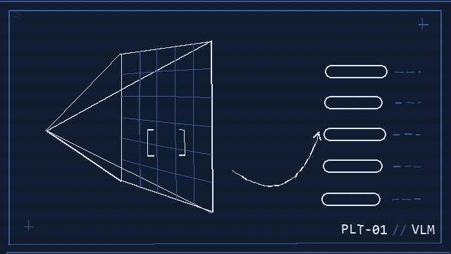

01 · IN PROGRESS
Multi-Agent Neuro-Symbolic Video Search
A multi-agent system that searches asynchronous, distributed video streams: per-stream agents evaluate temporal-logic queries locally while a central orchestrator fuses their results against a global neuro-symbolic spec — e.g. tracking an entity across disjoint camera networks — extending retrieval into automated response.
Temporal LogicVLMsMulti-Agent SystemsNeuro-Symbolic